class: openspace, cheese background-position: center; background-repeat: no-repeat; background-image: url(assets/dod-logo-square.png) # OPEN<BR>SPACES<BR> ### The Greatest Thing About ??? --- class: foo # Who Is This Guy?<br><br> <center> <img src="./assets/OrlandoDevOps2-06.jpg" height="200" align="left"> <img src="./assets/progress-chef.png" height="200" align="center"> </center> ### <br> <img src="./assets/myphoto-socialbook-440.png" align="left" width="150" hspace="50")> **Mike Butler**<br> Orlando DevOps Community group - Co Organizer<br> Solutions Architect - Progress Chef<br> FIRST Robotics Mentor<br> ??? * I am from Orlando and one of the co-organizers for the Orlando DevOps Community Group. * I am a Solution Architect for Progress Chef * I also am a Mentor for my sons FIRST Robotics Team * I am a firm believer in utilizing Agile DevOps practices and principles * I also believe in treating all of your daily work in an As Code approach! But that is a different presentation. --- class: center # DevOpsDays 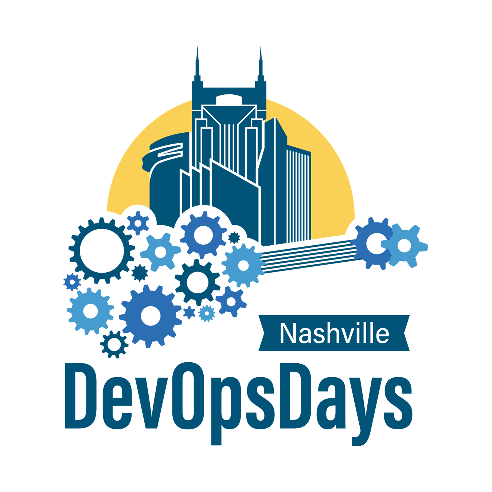 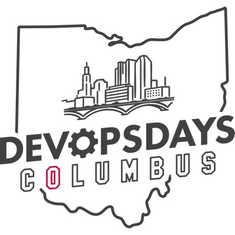 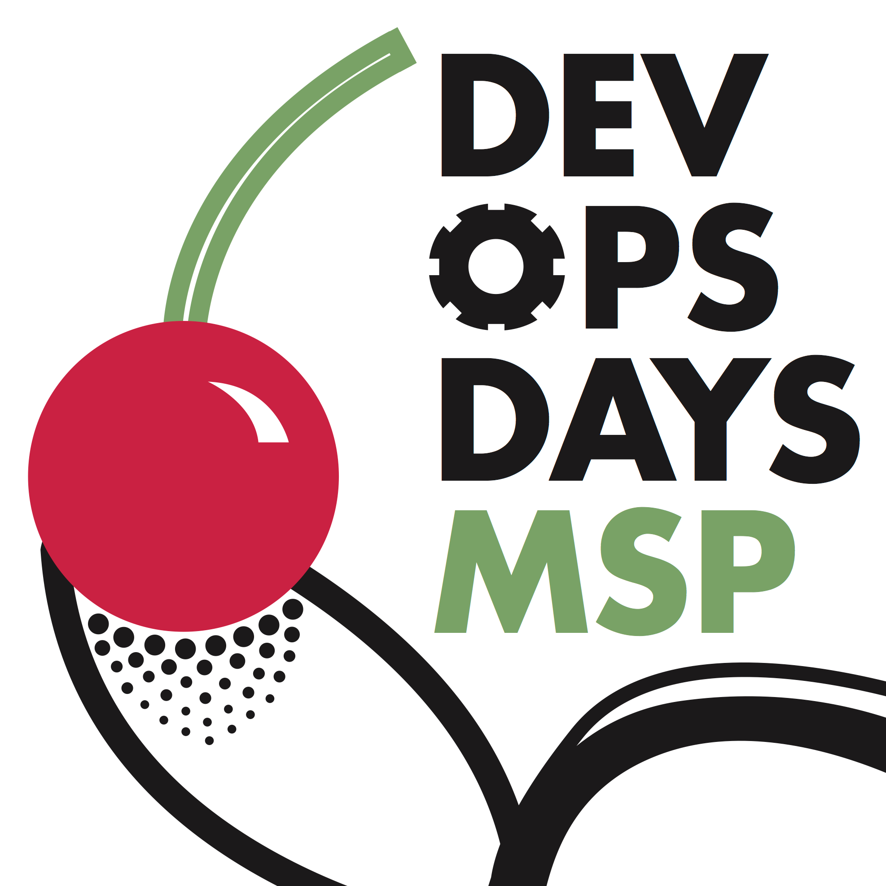 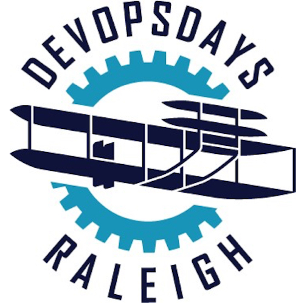 <br><br><br> 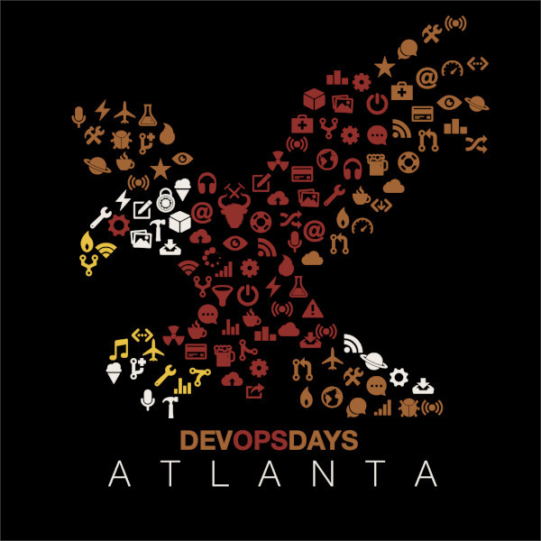 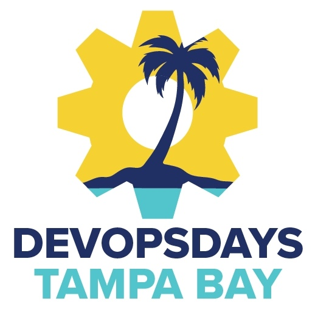 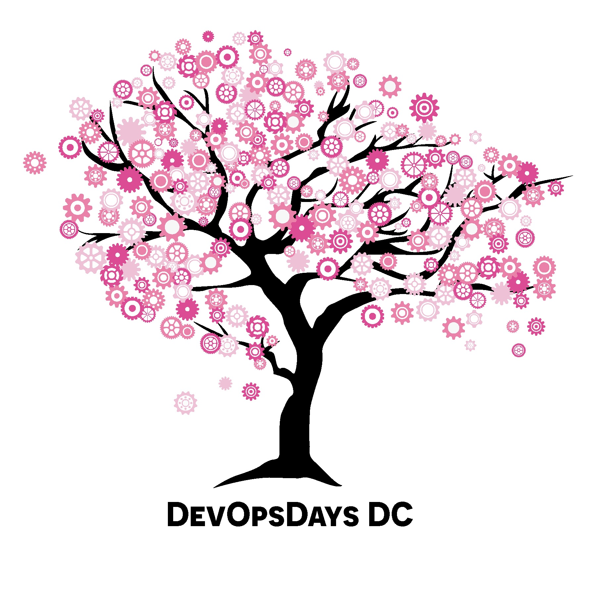 ??? * I Discovered DevOps from DevOpsDays Nashville in 2016 * Anyone want to guess who the first speaker was that day? * Andrew Clay Shafer presented [Chop Wood, Carry Water](https://www.youtube.com/watch?v=1Sy3XfC0qv8). * This is my 12th DevOpsDays in my 7th city. This making the 3rd time I've been here in Tampa Bay! * Nashville, Columbus (Ohio), Minneapolis, Atlanta, Raleigh, Washington DC and Tampa Bay --- class: center, openspace, middle background-image: url(assets/letstalk.jfif) background-position: center; background-repeat: no-repeat; ??? * Here is what we are going to do. * Raise your hands if you have been to a DevOpsDays before? * Keep them raised if you stayed and participated in Open Spaces * All down. How many of you have never heard of Open Spaces --- background-position: center; background-repeat: no-repeat; background-image: url(assets/field-and-sky.jpg) ??? This is an OPEN SPACE * We're talking about Open Spaces! They don't get much more open than that. * So what are Open Spaces at DevOpsDays? * They are meant to facilitate open discussions around topics chosen by the participants * We'll get into the details of that in a bit. * First let's go over the four principles and one law. --- class: openspace background-image: url(assets/space.jpg) background-position: center; background-repeat: no-repeat; ## WHO EVER COMES<BR> # IS THE RIGHT<BR>PEOPLE ??? * All of the folks that show up, well, those are the people that are supposed to be there. * There is no discretion to who should be there. * If someone goes and grabs some to join, they are the right people. --- class: openspace background-image: url(assets/space.jpg) background-position: center; background-repeat: no-repeat; ## WHAT EVER HAPPENS<br><br><br> # HAPPENS ??? * Simply go with the flow! If the topic diverges, or goes off the deep end, that's fine. * If someone starts side conversations, that's what happens. * If unicorns come streaming in with pixies upon their backs, it was meant to be. --- class: openspace background-image: url(assets/space.jpg) background-position: center; background-repeat: no-repeat; ## WHENEVER IT STARTS<BR>IS THE<BR><BR> # RIGHT TIME ??? * In the context of Open Spaces today, they are going to start around 3:00 today. * But what this really means is as you gather, if the group isn't ready to dive into the topic, take another minute or two with introductions. --- class: openspace background-image: url(assets/space.jpg) background-position: center; background-repeat: no-repeat; ## WHEN IT'S OVER<br><br><br> # IT'S OVER ??? * Again, we have some limitations to this today because after 30 minutes, it's over. * But that doesn't mean that if the topic ends at 15 minutes you have to hang around. * And really, these discussions can keep happening over beverages later. Or Slack. Or wherever! --- class: openspace background-image: url(assets/space.jpg) background-position: center; background-repeat: no-repeat; ## THE LAW OF<br><br><br> # TWO FEET ??? * This is the LAW that makes those principles possible. * Ultimately, all of the above principles are controlled by the Law of Two Feet. * If you aren't comfortable, or getting value, or participating, use the Law of Two Feet. * Don't feel obligated to stay if you aren't learning what you hoped, have a call to make, etc. * Everyone should feel free to come and go as they choose for the reason they choose. --- class: openspace background-image: url(assets/space.jpg) background-position: center; background-repeat: no-repeat; ## BRING YOUR<br><br><br> # BEST SELF ??? * This one isn't in the book of Open Spaces, but I think we should appreciate it. * Discussions and conduct should be in alignment with DevOpsDays Code of Conduct. * If you feel the Code of Conduct is broken, please use the Law of Two Feet straight to one of the staff members. * Ultimately, we are a community of Professionals and we should always be Professional. --- class: center # Open Spaces ARE GREAT! ??? * So why do I think they are the greatest part of DevOpsDays? * A couple of quick reasons. * They allow open discussions about topics we care about. Today! * They allow deeper dives into the presentations we have heard. * They encourage collaboration with our peers. * They let us interact with one another. * Social interaction and discussions is one of the best forms of Knowledge Transfer! --- background-image: url(assets/favorite-things.jpg) background-position: center; background-repeat: no-repeat; background-size: contain ??? * So one of the things that is difficult for some is to come up with things they want to talk about. * Usually it's the next day when I think of a really good one. * But I'm here to help, so here are a few of my favorite topics of the past. * As I just mentioned, Practicing Lean Coffee * Or, How has DevOps Changed? Have we succeeded? * How does Chat Ops help teams grow and learn? * Working Across Time Zones / Continental Divides / Dealing with Different DevOps Cultures * How does Agile work with DevOps? * Local DevOps Meetups. * Lessons Learned Planning a DevOpsDays. --- class: center, foo # When in Doubt, WEREWOLF! 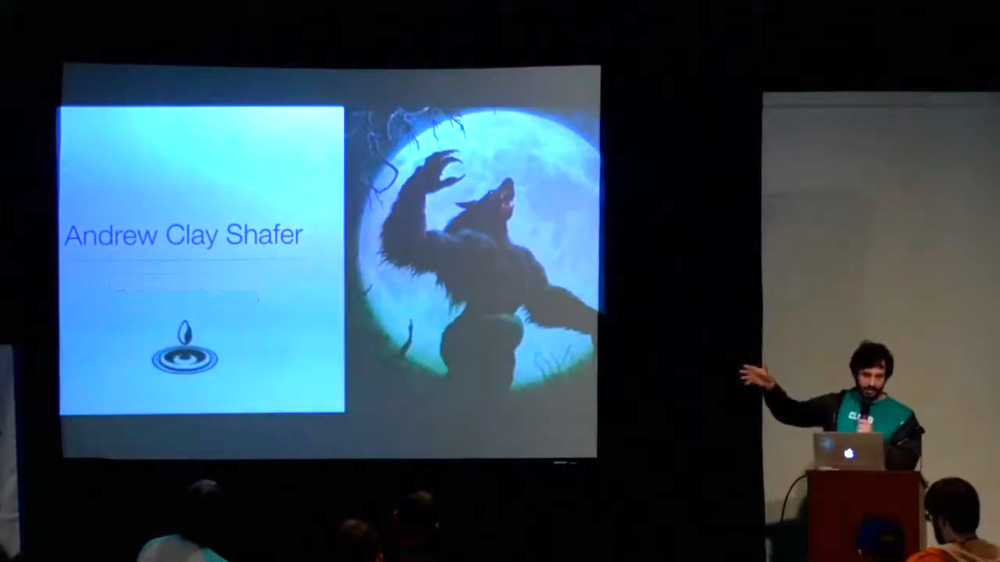 ??? * When you are in Doubt, you can always ask Andrew Clay Shafer to host a round of Werewolf. * In fact, that was one of my first and favorite open spaces at DevOpsDays Nashville in 2016. * Being my first event, it really put me at ease to particpate in other spaces. * Feel free to put that down! --- class: foo, center, cheese <img src="./assets/qr-submit.png" width="600" align="left"> <br><br> # ENTER<BR>TOPIC ??? * So you've heard a lot of good talks * You've listened to me describe my favorite things * Now we want to hear the things you want to discuss. * We are going to take all of the suggestions and compile them. * Immediately following the last presentation today, we will review the entire list. --- class: foo, center, cheese <BR><BR> # VOTE<BR>SOON! ??? * If you submitted a topic and aren't too shy, we will invite you all up to give 15 seconds of fame and inject a bit more background-color * Voting will begin immediately following those intros via Google Forms. * We will have this QR Code up again and open the polls for voting. * After 5 minutes, we will tally up the results, announce the topics and locations and then jump into the spaces. --- class: center # Taking notes ??? * A member of the Orlando DevOps Community Group will join each of the topic breakouts. * They are not there to host, but to take some notes and "keep time" * At 25 minutes, if not before, the group should come up with a few top tips, things discovered, outcomes, take aways, calls to action. * At the Closing, we will take about 5 minutes to review all we learned from the breakouts --- class: foo, center <br><br> 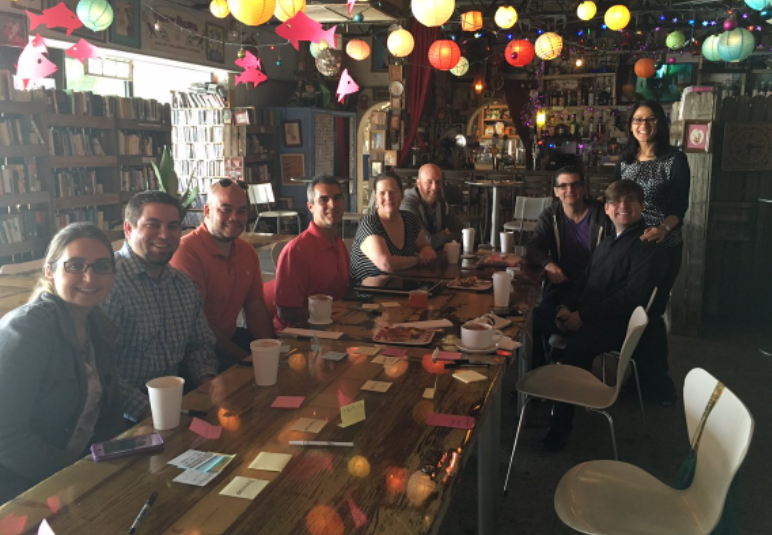 # Lean Coffee<br><br><br> ## Open Spaces Little Brother <br> #### Photo courtesy of Agile Orlando Meetup Group at Stardust Cafe. ??? * I wanted to call out Lean Coffee as a great shorter version of Open Spaces * Our Orlando DevOps Community group does this every month. * The principle of coming with topics and voting on them is the same. * You generally are time bound to 5 minutes per topic. * Want to learn more? Submit it as an Open Space topic! --- class: center, foo <br> 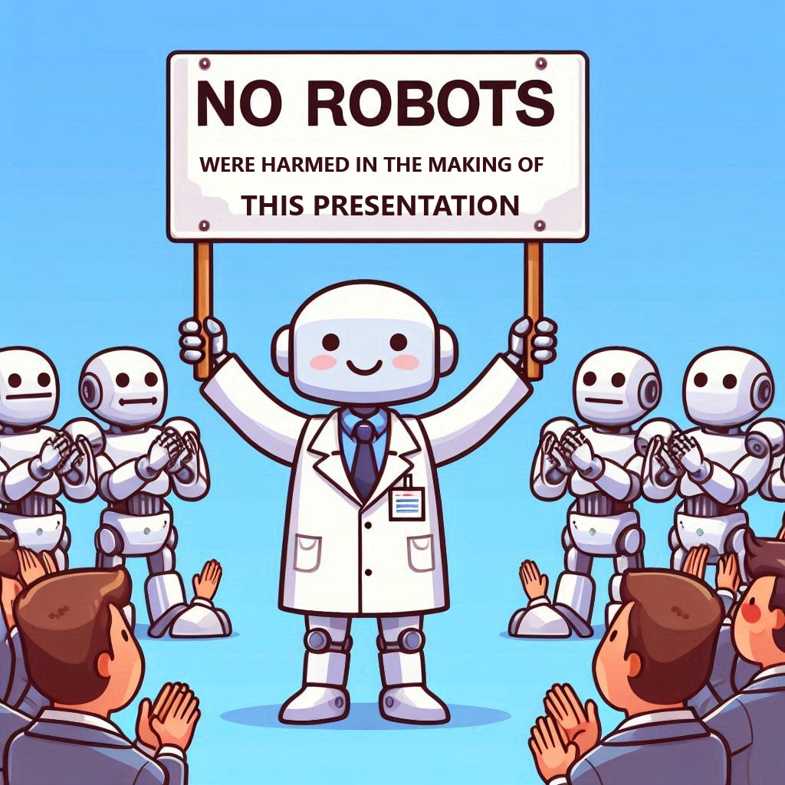 # THANK YOU!<br><br> #### <br> <img src="./assets/linqapp.jpg" width="250" align="left">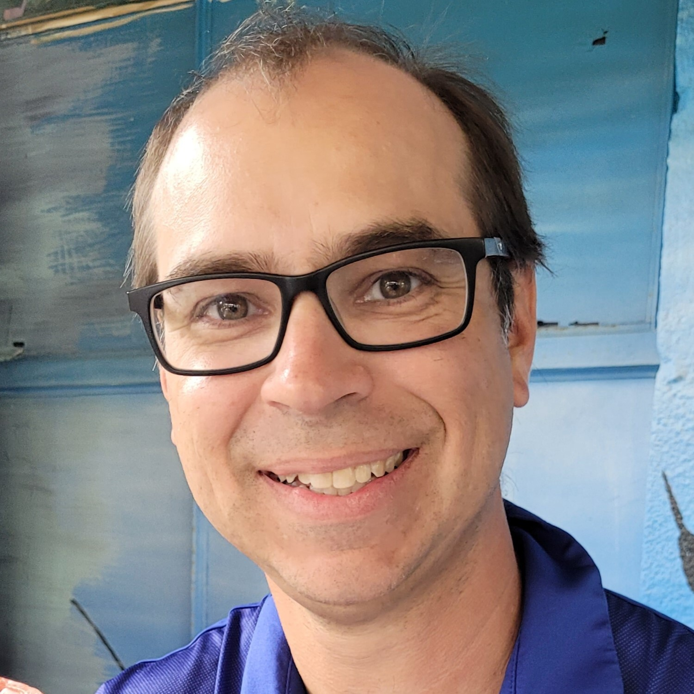 #### *DISCLAIMER: NO ROBOTS WERE HARMED IN THE MAKING OF THIS PRESENTATION ??? * Closing side. * Thank the members of the DevOpsDays Tampa Bay Organizing Committee * Thank the members of the Orlando DevOps Community Group (and all CG's out there) * Thank everyone for participating! * Disclaimer, No Robots Were Harmed in the Making of this Slide Deck --- class: center <img src="./assets/qr-submit.png" width="500" align="Center"> # LET'S FREAKIN GO! ??? * Now it is your turn! * Scan this QR CODE (it will be up at the end too) * Or find any of the post it notes and throw it up on the board